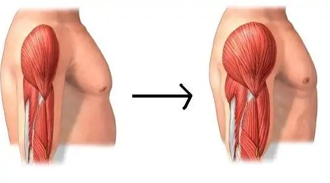

Cómo ganar masa muscular

Para la ganancia de la masa muscular hay que llevar a cabo dos grandes factores: Ejercicios con pesas y volumen. Para poder acompañar en nuestro desarrollo muscular es importante seguir una alimentación a volumen con las proteinas necesarias. encuenta más información en el apartado de Consejos
Trabaja el abdomen con esta rutina calisténica

Con esta rutina de calistenia podrás fortalecer tu abdomen de manera resistente, además podras tener más fuerza en tu agarre. Encuentra más información en el apartado de Ejercicios